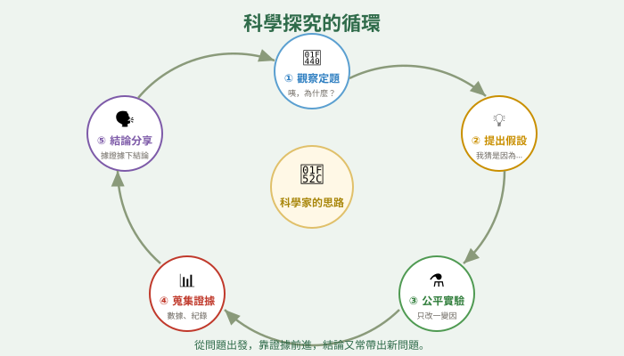
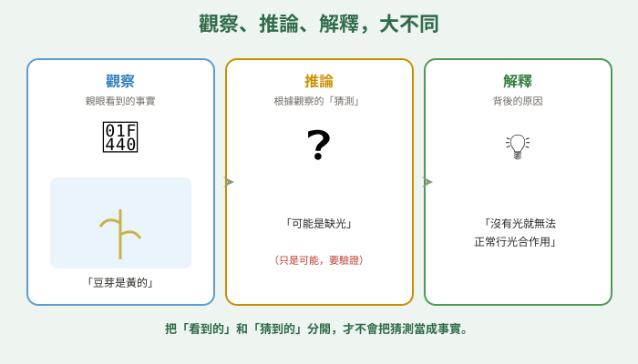
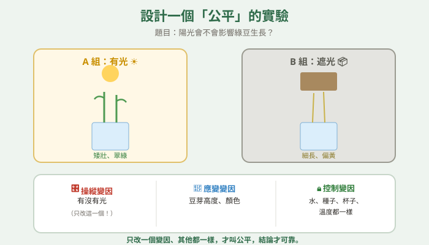
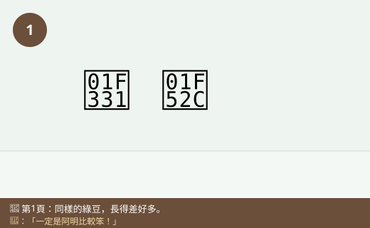
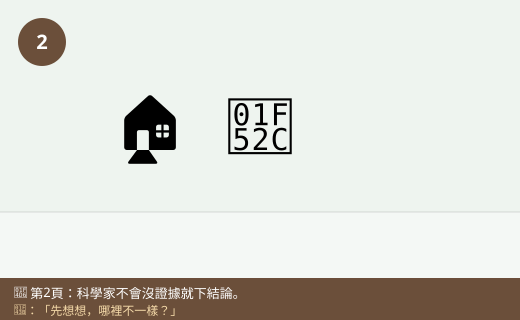
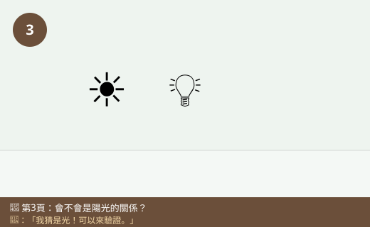
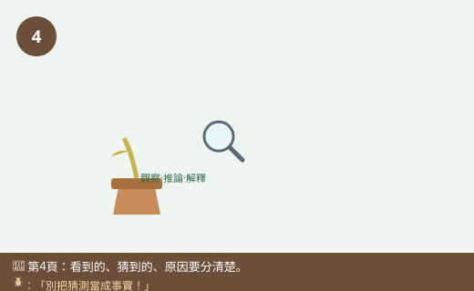
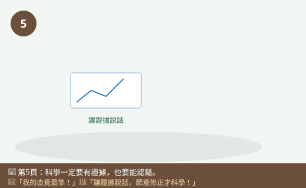
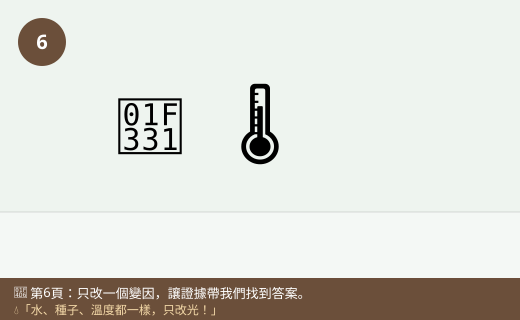

圖一（流程圖）：科學探究的循環

- 圖像目的
- 呈現科學探究是一個會循環、產生新問題的歷程。
- 圖中應出現的元素
- 五個環節（觀察定題→假設→實驗→證據→結論分享）連成圈，箭頭回到起點。
- 必須標示的科學概念
- 探究是循環：結論常帶出新問題。
- 圖說
- 「從問題出發，靠證據前進，再帶出新問題。」
- AI 繪圖提示詞
- 溫暖手繪繪本風，五個步驟圍成循環箭頭：觀察定題、提出假設、設計公平實驗、蒐集證據、結論與分享。繁體中文，白底。
- 避免畫錯的提醒
- 箭頭形成循環而非單向終點；步驟順序正確。
💡 科學家不是「什麼都知道」，而是「懂得怎麼找答案」——從一個好問題出發，靠假設、實驗和證據，一步步逼近真相！
| 適合年級 | 國小六年級 |
|---|---|
| 可銜接年級 | 六年級 → 國中科學方法與基本測量 |
| 主題分類 | 科學方法與探究實驗 |
| 核心概念 | 科學探究流程；區分觀察、推論與解釋；用證據支持結論 |
| 關鍵詞 | 問題、假設、實驗、變因、證據、推論、結論、科學態度 |
| 可銜接的國中概念 | 科學方法、實驗設計、數據分析與論證 |
| 建議閱讀時間 | 約 18 分鐘 |
| 適合搭配的課堂活動 | 提問練習、設計公平實驗、觀察vs推論分類 |
自然課，全班一起種綠豆。一週後，小狐同學發現一件怪事：他放在窗邊的綠豆長得又高又綠，可是隔壁阿明放在教室後方櫃子裡的綠豆，卻長得又細又黃、軟趴趴的。「奇怪，同樣是綠豆、同一天種的，為什麼差這麼多？」他脫口而出：「一定是阿明比較笨，不會種！」
黑熊老師聽到了，笑著搖搖頭：「小狐，你剛剛做了一件科學家最忌諱的事——還沒找證據，就急著下結論、還怪到別人身上。科學家遇到這種『咦，為什麼？』的時候，不會馬上猜答案，而是會停下來，好好想一想：到底是哪裡不一樣？」
小狐同學被點醒了，仔細比較兩盆豆芽：一樣的種子、一樣的水、一樣大小的杯子……「啊！我放窗邊有『陽光』，阿明放櫃子裡『很暗』。會不會是陽光的關係？」黑熊老師眼睛一亮：「這就對了！你剛剛提出了一個可以驗證的『假設』。接下來呢？」小狐同學想了想：「我可以再種兩盆，其他都一樣，一盆給光、一盆不給光，比比看！」
黑熊老師開心地說：「太棒了！你剛剛走了一遍『科學家的思路』：先觀察到現象、提出好問題、想出可以檢驗的假設、設計公平的實驗、蒐集證據，最後才根據證據下結論。科學家不是什麼都知道的人，而是最懂得『怎麼找答案』的人。我們一起來看看，科學家到底怎麼想吧！」
黑熊老師，科學家是不是很聰明、什麼都知道？
科學家厲害的不是「什麼都知道」，而是「懂得怎麼找答案」。他們面對不知道的事，會用一套可靠的方法，一步步找出真相——這套方法，比記住很多答案更重要。
那這套方法有哪些步驟？
大致是：①觀察發現問題（咦，為什麼？）→②提出可以檢驗的假設（我猜是因為……）→③設計公平的實驗去驗證（只改一個變因）→④蒐集證據（數據）→⑤根據證據下結論，並和別人討論分享。這是一個循環，結論常常又帶出新問題。
補一個超重要的觀念！科學家會小心分清楚三件事：「觀察」是你親眼看到的事實（豆芽是黃的）；「推論」是你根據觀察想到的猜測（可能是缺光）；「解釋」是背後的原因（沒有光就無法正常行光合作用）。把「看到的」和「猜到的」分開，才不會把猜測當成事實。
原來我一開始說「阿明比較笨」，就是把沒有證據的猜測當成結論了！
沒錯，而且那還不是個好的科學假設。好的假設要「能被檢驗」——你可以設計實驗去驗證「有沒有光」，但沒辦法用實驗驗證「阿明笨不笨」。科學只處理能用證據檢驗的問題。
那如果實驗結果和我的假設不一樣，怎麼辦？是不是就失敗了？
一點都不算失敗！假設被推翻，也是很寶貴的發現——它告訴你「原本的猜測不對」，讓你更接近真相。科學家會誠實面對證據，就算結果不如預期，也不能偷改數據。願意修正自己的想法，正是最重要的科學態度。
哼，科學麻煩死了！我覺得是什麼就是什麼，我說豆芽長不高是因為它「懶惰」，這就是答案！不用什麼實驗證據，我的直覺最準，而且我從來不會錯～
迷思怪獸，這正是科學和「隨便猜」最大的不同！科學不能只靠直覺或「我覺得」，一定要有證據。而且「豆芽懶惰」沒辦法用實驗檢驗，不是科學問題。還有，科學家最了不起的地方就是「知道自己可能會錯」，願意被證據糾正——覺得自己絕不會錯的人，反而最不科學。你來設計實驗，讓證據說話！
我們來走一遍完整的探究！以「陽光會不會影響綠豆生長」為題：提出假設、設計只改變「光」一個變因的公平實驗、每天記錄豆芽高度、畫成表格，再看證據下結論。控制變因（水、種子、溫度）一定要一樣喔，這樣才公平！
科學家不是「什麼都知道」，而是「懂得怎麼找答案」。找答案的步驟大致是：①觀察發現問題（咦，為什麼？）→②提出可以檢驗的假設（我猜是因為……）→③設計公平的實驗（一次只改一個變因）→④蒐集證據（數據、紀錄）→⑤根據證據下結論，並和別人討論分享。要小心分清楚：觀察（看到的事實）、推論（根據觀察的猜測）、解釋（背後的原因）。就算實驗結果和猜的不一樣，也不是失敗——那也是有用的發現。誠實面對證據、願意修正想法，是最重要的科學態度。
科學探究是一個循環歷程：觀察與定題（提出可探究的問題）→提出假設（可被檢驗、可被否證的預測）→規劃與執行（設計公平測試，操控變因、控制其他變因、測量應變變因）→分析與發現（整理數據、找出規律、判斷是否支持假設）→討論與傳達（提出以證據為基礎的結論並與他人溝通、接受檢驗）。過程中須嚴格區分觀察（事實）、推論（依觀察的推測）、解釋（因果說明）。好的科學問題與假設必須能以證據檢驗；假設被推翻也是有價值的結果。核心的科學態度包括：實事求是、不竄改數據、樂於接受同儕檢驗、願意依新證據修正結論。
科學方法強調以可否證的假設、受控實驗與可重複的證據建立知識。變因分析（自變項／應變項／控制變項）、對照組設計、樣本與重複測量、誤差與變異的處理，都是提高結論可信度的關鍵。資料以表格、圖表呈現並進行論證（主張—證據—推理）。科學知識具暫時性與自我修正：新證據可修正或推翻既有理論；同儕審查與可重現性是把關機制。應區分科學問題（可經驗檢驗）與非科學問題（無法以證據判定）。國中「科學的態度與本質」「基本測量與數據處理」會延伸這些能力。









| 適合年級 | 六年級 |
|---|---|
| 材料 | 綠豆數十顆、相同的杯子數個、棉花或衛生紙、水、尺、紀錄表；一處有光、一處無光（紙箱遮光）但溫度相近的地方 |
有沒有照到光（有光／遮光）。
豆芽的高度、顏色、生長狀況。
種子數量與品質、水量與澆水次數、杯子大小、溫度、觀察時間。
| 天數 | 有光組高度 | 遮光組高度 | 顏色/狀況比較 |
|---|---|---|---|
| 第 3 天 | |||
| 第 5 天 | |||
| 第 7 天 |
你會蒐集到「有光組」和「遮光組」的生長數據。（有趣的是：遮光的豆芽可能一開始長得又細又高——這是它在拚命伸長找光，但葉子偏黃、不健康；有光的則較矮壯、翠綠。）重點不在於「猜對」，而在於你的結論是根據自己蒐集的證據，而不是憑感覺或成見。如果結果和假設不同，那也是有價值的發現，代表要修正想法。這整個過程——觀察→假設→公平實驗→證據→結論——就是科學家思考的方式。過程中要誠實記錄、不竄改數據，並樂於接受同學檢驗，這就是科學態度。
⚠️ 安全提醒：本實驗安全低成本；使用剪刀、紙箱時小心手指；種子與豆芽不放入口（未經處理不宜食用）；水灑出擦乾避免滑倒；遮光箱注意不要完全悶住（仍需空氣流通）；實驗後洗手。誠實面對數據，不因為想「符合假設」而偷改紀錄。
👾 迷思說法：科學家就是「什麼都知道、絕不會錯」的聰明人。
為什麼容易誤解：覺得科學家很權威。
✅ 正確說法：科學家厲害的是「懂得怎麼找答案」，而不是什麼都知道。他們也會錯，最重要的是願意依新證據修正想法。承認自己可能錯，正是科學精神。
可以怎麼驗證：科學史上許多理論後來被新證據修正，正是科學不斷進步的方式。
👾 迷思說法：只要「我覺得」「憑直覺」就能得到科學結論。
為什麼容易誤解：直覺有時候很快很方便。
✅ 正確說法：科學結論一定要有「證據」支持，不能只靠感覺或成見。直覺可以當作提出假設的靈感，但必須用實驗和數據去檢驗。
可以怎麼驗證：很多「感覺對」的想法，一做實驗就發現是錯的。
👾 迷思說法：實驗結果和假設不一樣，就是實驗失敗了。
為什麼容易誤解：覺得沒「猜中」就是失敗。
✅ 正確說法：假設被推翻也是有價值的結果，它告訴你原本的猜測不對，讓你更接近真相。科學重視的是「誠實根據證據」，不是「一定要猜中」。
可以怎麼驗證：許多重大發現，正是來自「和預期不同」的意外結果。
👾 迷思說法：「看到地上濕」就等於「剛剛下過雨」。
為什麼容易誤解：把推論當成觀察到的事實。
✅ 正確說法：「地上濕」是觀察（事實）；「剛下過雨」是推論（猜測），也可能是有人灑水、灑水車經過。要把觀察和推論分開，並找更多證據才能確認。
可以怎麼驗證：檢查是否只有局部濕、天空有沒有雲，就能分辨是下雨還是灑水。
👾 迷思說法：所有問題都能用科學實驗得到答案。
為什麼容易誤解：覺得科學萬能。
✅ 正確說法：科學只能處理「可以用證據檢驗」的問題（如陽光是否影響植物生長）。像「哪首歌最好聽」「豆芽懶不懶」這類無法用證據判定的問題，就不是科學問題。
可以怎麼驗證：試著為「哪首歌最好聽」設計公平實驗，會發現無法客觀檢驗。
1. 科學家最厲害的地方是？
(A) 什麼都知道 (B) 懂得用可靠的方法找答案 (C) 絕對不會錯 (D) 記住最多答案
答案：B。科學重在「怎麼找答案」的方法。
2. 「豆芽是黃色的」和「豆芽可能缺光」分別屬於？
(A) 都是觀察 (B) 都是推論 (C) 前者觀察、後者推論 (D) 前者推論、後者觀察
答案：C。看到的是觀察，據此的猜測是推論。
3. 設計「陽光是否影響綠豆生長」的公平實驗，應該？
(A) 兩組什麼都不同 (B) 只改變光，其他條件都一樣 (C) 每組換不同種子 (D) 隨便種就好
答案：B。只改操縱變因、控制其他變因才公平。
4. 實驗結果和假設不一樣時，正確的態度是？
(A) 偷偷改數據符合假設 (B) 誠實記錄，據證據修正想法 (C) 放棄不做了 (D) 假裝沒看到
答案：B。誠實面對證據、願意修正是科學態度。
5. 下列哪一個「不是」科學可以檢驗的問題？
(A) 陽光會不會影響植物生長 (B) 溫度會不會影響溶解快慢 (C) 哪一首歌最好聽 (D) 磁鐵會不會吸鐵
答案：C。「最好聽」無法用證據客觀檢驗，不是科學問題。
1. 請依順序寫出科學探究的主要步驟。
觀察發現問題 → 提出可檢驗的假設 → 設計公平的實驗（控制變因）→ 蒐集證據（數據）→ 根據證據下結論並討論分享（且是循環，結論會帶出新問題）。
2. 「觀察」和「推論」有什麼不同？請用一個例子說明。
觀察是親眼看到的事實，推論是根據觀察做的猜測。例如「看到操場地上是濕的」是觀察；「所以剛剛下過雨」是推論（也可能是灑水）。
3. 為什麼「我覺得豆芽長不高是因為它懶惰」不是一個好的科學假設？
因為它無法用實驗和證據檢驗（沒辦法測量或驗證豆芽「懶不懶」）。好的科學假設必須能被檢驗、能被證據支持或推翻，例如「缺少陽光會使豆芽長不好」就可以設計實驗驗證。
1. 小狐同學說：「我家的貓每次打雷前都會躲起來，所以貓有預測天氣的超能力！」請用科學家的思路，指出他推論的問題，並設計一個更嚴謹的方法來檢驗。
問題：只憑幾次印象就下結論，可能是巧合，也沒排除其他原因（貓可能是聽到聲音才躲，不是「預測」）。更嚴謹的方法：長期記錄「貓躲起來」和「之後有沒有打雷／下雨」的次數，統計相關性；並比較「打雷但貓沒躲」「貓躲了卻沒打雷」的情況，用足夠多的數據判斷，而不是靠少數印象。也要區分「相關」不等於「有超能力」。
2. 兩個同學做同樣的實驗，卻得到不太一樣的結果。以科學的態度，他們接下來應該怎麼做？為什麼「可以重複驗證」對科學很重要？
他們應該：檢查各自的實驗步驟、變因控制、測量方法哪裡不同，找出造成差異的原因；再多做幾次、增加樣本，看哪個結果比較可靠；也可以請第三人重做。可重複驗證很重要，因為若一個結果只有一次、別人重做卻做不出來，就不可靠；能被許多人重複做出來的結果，才是可信的科學知識。這也是科學能自我修正、避免個人誤差或造假的把關機制。
| 向度 | 待加強（1） | 通過（2） | 優秀（3） |
|---|---|---|---|
| 探究流程 | 直接下結論無方法 | 能依步驟提假設並設計實驗 | 能完整探究並反思修正 |
| 證據論證 | 憑感覺、混淆觀察推論 | 能區分觀察推論、用證據 | 能以主張證據推理嚴謹論證 |
| 科學態度 | 竄改或忽視不利數據 | 誠實記錄、接受結果 | 主動求驗證、依證據修正 |
| 檢核項目 | 結果 | 備註 |
|---|---|---|
| 科學概念是否正確 | ✅ | 探究循環、觀察／推論／解釋之別、可否證假設、變因控制、科學知識可修正，敘述正確。 |
| 是否符合年級理解程度 | ✅ | 六年級以綠豆探究情境統整探究能力，銜接國中科學方法。 |
| 是否有錯誤或過度簡化的比喻 | ✅ | 「科學家懂得找答案」定位正確，未神化科學。 |
| 是否清楚區分觀察、推論與解釋 | ✅ | 本篇即以此區分為核心並反覆示範。 |
| 圖像提示詞是否可能造成誤解 | ✅ | 已提醒探究為循環、觀察為事實、公平實驗只改一變因。 |
| 實驗是否安全 | ✅ | 綠豆探究安全低成本，提醒不入口、通風、誠實記錄。 |
| 是否需要補充資料來源 | ✅ | 對應學習表現—探究能力與科學態度；見教師補充。 |
| 是否適合轉成 HTML 網頁 | ✅ | 結構完整，含互動測驗與摺疊區。 |